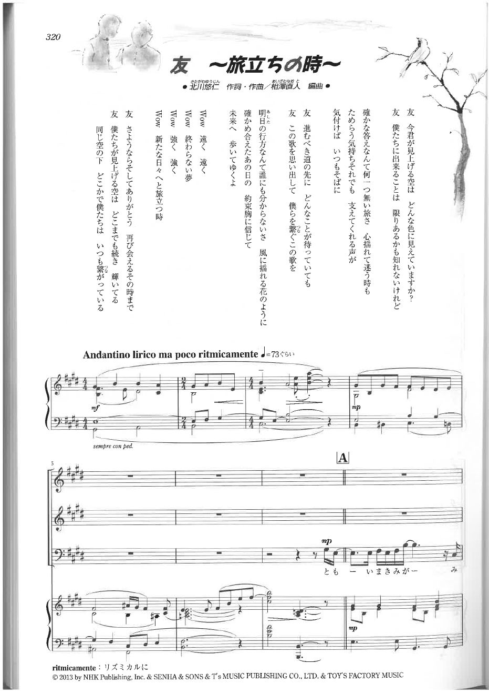

KAVA SOUND / PRACTICE BETA
自主練習
① 自分のパート
ソプラノ分離音源はβ版です。伴奏や別パートが少し残る場所があれば、そこも今後調整します。
② 再生・繰り返し
イヤホン推奨
0:00 / 4:35
速度
③ 楽譜・歌詞
拡大できます
1 / 8
④ 自分の歌を録音して聴く
端末内のみ今選んでいる練習モードを再生しながら録音します。
録音待機中
KAVA SOUND / PRACTICE BETA
